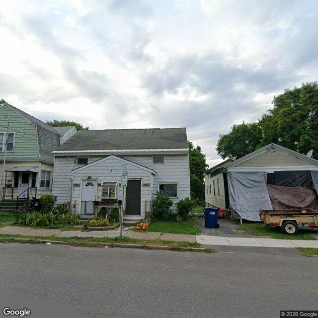

Property entry
413-15 Wolf St
Published 2026-11-20T01:54:10+00:00
Parcel key: 002-05-160

City records
Matches use parcel IDs or normalized property addresses. Nearby properties are not treated as matches. Records may include historical or closed cases; check each record's status and dates. Publication dates are not source-data dates.
Vacant properties 0
No matches stored for this feed. The feed or address matching may be incomplete; this is not confirmation that no records exist.
Records refreshed 2026-11-18.
Rental registry 1
- Latitude
- 43.07280562
- Longitude
- -76.16346773
- NeedsRR
- Yes
- ObjectId
- 8
- PropertyAddress
- 413-15 Wolf St
- RR_app_received
- 1780963200000
Records refreshed 2026-11-18.
Code violations 5
- Latitude
- 43.07280562
- Longitude
- -76.16346773
- Neighborhood
- Washington Square
- ObjectId
- 37854
- SBL
- 002.-05-16.0
- complaint_address
- 413-15 Wolf St
- Latitude
- 43.07280562
- Longitude
- -76.16346773
- Neighborhood
- Washington Square
- ObjectId
- 37855
- SBL
- 002.-05-16.0
- complaint_address
- 413-15 Wolf St
- Latitude
- 43.07280562
- Longitude
- -76.16346773
- Neighborhood
- Washington Square
- ObjectId
- 37857
- SBL
- 002.-05-16.0
- complaint_address
- 413-15 Wolf St
- Latitude
- 43.07280562
- Longitude
- -76.16346773
- Neighborhood
- Washington Square
- ObjectId
- 37858
- SBL
- 002.-05-16.0
- complaint_address
- 413-15 Wolf St
Records refreshed 2026-11-18.
Unfit properties 0
No matches stored for this feed. The feed or address matching may be incomplete; this is not confirmation that no records exist.
Records refreshed 2026-11-18.
AI image observations (unverified)
These observations are generated from an image, not an inspection or an official code finding. No human verification is recorded here.
Image capture date: Not recorded. The entry publication date does not establish the age of the image.
Automated image description
The property features a multi-unit dwelling with a small front yard and an ancillary structure largely covered by tarps, with a utility trailer parked nearby.
Property type guess: two_family
Visible conditions
- Main dwelling has light-colored siding, appearing generally intact.
- Roof of the main dwelling shows some discoloration consistent with age.
- Two distinct entry doors are visible on the front facade of the main dwelling.
- Windows on the main dwelling appear to be of an older style but generally intact.
- A small, somewhat maintained front yard with shrubs and plantings is present.
- An ancillary structure to the right is extensively covered by grey and brown tarps.
- A utility trailer is parked in front of the tarp-covered ancillary structure.
- A blue recycling bin is visible near the ancillary structure.
Condition scores
- Porch Or Entry
- fair
- Roof
- fair
- Siding Or Facade
- fair
- Trash Debris
- none_visible
- Vegetation Overgrowth
- none_visible
- Windows Doors
- fair
- Yard Or Lot
- fair
Visible flags
- Active Construction Visible
- no
- Boarded Windows Or Doors
- no
- Fire Damage Visible
- no
- Structural Damage Visible
- no
- Vacancy Signs Visible
- no
Possible image-only flags
- Ancillary structure largely covered by tarps, obscuring its condition.
- Utility trailer parked in the yard.
AI review boxes
- Tarp-covered structure: Condition of the ancillary structure is obscured by extensive tarping.
- Utility trailer: Presence of a utility trailer parked in the yard area.
Review reasons
- Possible image-only issue
Image quality
- Available
- True
- Bytes
- 66451
- Needs Rerun
- False
['The condition of the ancillary structure is largely obscured by tarps.']
ACS tract context
Census Tract 2; Onondaga County; New York
- Housing units
- 1686
- Median gross rent
- 146700
- Median household income
- 51848
- Poverty rate
- 28.1
- Renter-occupied share
- 50.1
- Total population
- 3511
- Vacancy rate
- 14.7
OpenStreetMap nearby
60 meter search radius
Nearby map data is temporarily unavailable. This does not mean there are no mapped features.